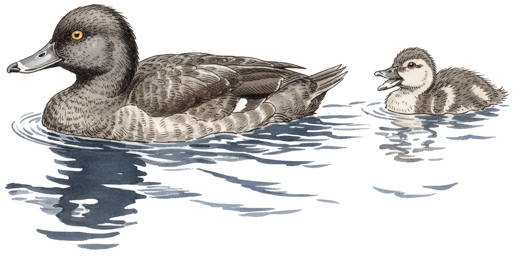

博客 / Blog

凤头潜鸭（学名 Aythya fuligula）是一种中型潜水鸭，原生于欧亚大陆。凭借卓越的潜水能力，它们能深入水下捕食猎物。
The tufted duck (Aythya fuligula) is a medium-sized diving duck native to Eurasia. Known for its diving ability, it can plunge to great depths to forage for food.
2025
2025-12-08
2023
2023-12-31